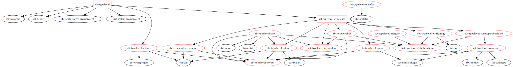

sbt-typelevel
sbt-typelevel helps Scala projects to publish early-semantically-versioned, binary-compatible artifacts to Sonatype/Maven from GitHub actions. It is a collection of plugins that work well individually and even better together.
Quick start
// Pick one, for plugins.sbt
// Full service, batteries-included, let's go!
addSbtPlugin("org.typelevel" % "sbt-typelevel" % "<version>")
// Set me up for CI release, but don't touch my scalacOptions!
addSbtPlugin("org.typelevel" % "sbt-typelevel-ci-release" % "<version>")
// Then, in your build.sbt
ThisBuild / tlBaseVersion := "0.4" // your current series x.y
ThisBuild / developers +=
tlGitHubDev("armanbilge", "Arman Bilge") // your GitHub handle and nameThen, on GitHub set the following secrets on your repository:
SONATYPE_USERNAMEandSONATYPE_PASSWORDPGP_SECRET: output ofgpg --armor --export-secret-keys $LONG_ID | base64PGP_PASSPHRASE(optional, use only if your key is passphrase-protected)
FAQ
How do I introduce breaking changes intended for my next version?
Bump your tlBaseVersion to the next breaking-version according to early-semver, e.g. 0.7 to 0.8 or 4.2 to 5.0.
How do I indicate the first version that I published Scala 3 artifacts for?
ThisBuild / tlVersionIntroduced := Map("3" -> "0.4.2")How do I disable fatal warnings in CI?
If you are using sbt-typelevel fatal warnings are on by default in CI.
ThisBuild / tlFatalWarningsInCi := falseIf you are only using sbt-typelevel-ci-release, you are completely in charge of your own scalacOptions, including fatal warnings.
How do I publish snapshots in CI?
// any branches you want snapshots of
ThisBuild / tlCiReleaseBranches := Seq("main")What happens if I push a tag and commit at the same time?
It Just Works™.
How do I split my CI matrix into separate jobs for JVM, JS, etc?
// Before
val root = project.in(file("."))
.enablePlugins(NoPublishPlugin)
.aggregate(
coreJVM,
coreJS,
io.jvm,
node.js,
io.js,
scodec.jvm,
scodec.js,
protocols.jvm,
protocols.js,
reactiveStreams,
benchmark
)
// After
val root = tlCrossRootProject
.aggregate(core, io, node, scodec, protocols, reactiveStreams, benchmark)How do I publish to s01.oss.sonatype.org?
ThisBuild / tlSonatypeUseLegacyHost := falseCustomization
The complete list of plugins, settings, and utilities is given below. The sbt-typelevel-ci-release and sbt-typelevel super-plugins automatically load most of them. The diagram below shows their inter-dependencies.
Instead of using the super-plugins, for finer-grained control you can always add plugins individually to your project and even build your own custom super-plugin.
- sbt-typelevel-no-publish,
NoPublishPlugin - sbt-typelevel-kernel,
TypelevelKernelPlugin
tlIsScala3(setting): true ifscalaVersionis 3.x
tlReplaceCommandAlias(method): replace aaddCommandAliasdefinition
tlReleaseLocal(command): alias for+publishLocal- sbt-typelevel-versioning,
TypelevelVersioningPlugin: Establishes a git-based, early semantic versioning scheme
tlBaseVersion(setting): the series your project is in. e.g., 0.2, 3.5
tlUntaggedAreSnapshots(setting): If true, an untagged commit is given a snapshot version, e.g.0.4-17-00218f9-SNAPSHOT. If false, it is given a release version, e.g.0.4-17-00218f9. (default: true)- sbt-typelevel-mima,
TypelevelMimaPlugin: Determines previous MiMa artifacts via yourversionsetting and git tags.
tlVersionIntroduced(setting): A mapscalaBinaryVersion -> versione.g.Map("2.13" -> "1.5.2", "3" -> "1.7.1")used to indicate that a particularcrossScalaVersionsvalue was introduced in a given version (default: empty).- sbt-typelevel-sonatype,
TypelevelSonatypePlugin.
tlRelease(command): check binary-compatibility and+publishto sonatype
tlSonatypeUseLegacyHost(setting): publish tooss.sonatype.orginstead ofs01.oss.sonatype.org(default: true)- sbt-typelevel-settings,
TypelevelSettingsPlugin: Good and/or opinionated defaults for scalac settings etc., inspired by sbt-tpolecat.
tlFatalWarnings(setting): Convert compiler warnings into errors (default: false).- sbt-typelevel-github,
TypelevelGitHubPlugin,TypelevelScalaJSGitHubPlugin: populates boilerplate settings assuming you are using GitHub.
tlGitHubDev(user, fullName)(method): Helper to create aDeveloperentry from a GitHub username.- sbt-typelevel-ci,
TypelevelCiPlugin: Sets up GitHub actions to run tests and check binary-compatibility in CI.
tlCrossRootProject(method): helper to create arootproject that can aggregate bothProjects andCrossProjects. Automatically creates separate jobs in the CI matrix for each platform (JVM, JS, etc.).- sbt-typelevel-sonatype-ci-release,
TypelevelSonatypeCiReleasePlugin: Sets up GitHub actions to publish to Sonatype in CI.
- Requires the
SONATYPE_USERNAMEandSONATYPE_PASSWORDsecrets
tlCiReleaseTags(setting): Controls whether or not v-prefixed tags should be released from CI (default true).
tlCiReleaseBranches: The branches in your repository to release from in CI on every push. Depending on your versioning scheme, they will be either snapshots or (hash) releases. Leave this empty if you only want CI releases for tags. (default:[]).- sbt-typelevel-ci-signing,
TypelevelCiSigningPlugin: Sets up GitHub actions to sign your artifacts in CI.
- Requires
PGP_SECRETsecret, with your base64-encoded PGP key
- Optionally set the
PGP_PASSPHRASEsecret, but we do not recommend passphrase-protected keys for new projects. See discussion in #9. - sbt-typelevel-ci-release,
TypelevelCiReleasePlugin: The super-plugin that sets you up with versioning, mima, signing, and sonatype publishing, all in GitHub actions. - sbt-typelevel,
TypelevelPlugin: The super-super-plugin intended for bootstrapping the typical Typelevel project. Sets up CI release, scalac settings, headers, and formatting.
tlFatalWarningsInCi(setting): Convert compiler warnings into errors under CI builds (default: true).
Dependency diagram
sbt-typelevel plugins are in red and the super-plugins are boxed.
